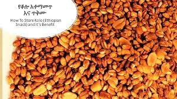
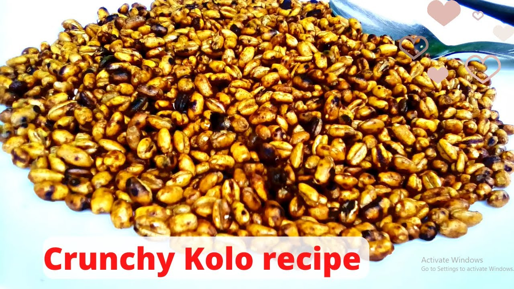

Keep the Crunch
Tips to Preserve Your Kolo Snacks!

To keep your Kolo snacks fresh and tasty for longer, it's essential to master the art of snack preservation.
Use airtight containers or resealable bags to protect them from moisture and air, and store them in a cool,
dry place away from direct sunlight. For certain snacks, refrigeration may be beneficial, while others can be
frozen for extended shelf life. By following these simple preservation tips, you can ensure that the delightful
crunch and rich flavors of Kolo snacks last, allowing you to savor their goodness whenever the craving strikes!
How to Make Kolo
A Delicious Ethiopian Snack!

To prepare Kolo, start by roasting the barley (Senfef Gebese) in a dry skillet over medium heat, stirring
frequently until it turns golden brown and fragrant. This process typically takes about 10-15 minutes. Once
roasted, remove the barley from the heat and let it cool. In a separate bowl, combine the roasted barley with
roasted peanuts, mixing them together thoroughly. Next, season the mixture with salt, sugar, and pepper powder
according to your taste preferences. For an extra layer of flavor, you can also add spices like cumin or chili
powder if desired. Once everything is well combined, transfer the Kolo to an airtight container for storage.
Enjoy your homemade Kolo as a crunchy snack anytime, whether at home or on the go!